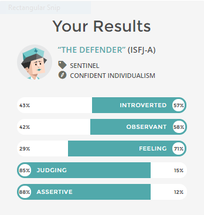
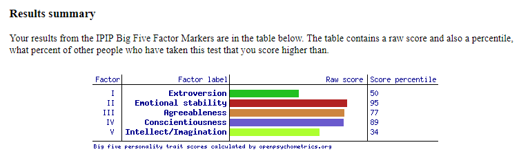

Hello to whomever is looking at this, as you’ve seen my name is Jake, I’m 21, and I’m Australian. I completed year 12 in 2015 and decided to take time off studying to work and do my own thing and have some fun, but now I’m back and I’m currently doing a Bachelor of Information Technology part time study. I’ve forgotten a lot of what I used to know of HTML and CSS, so it’s quite fun relearning and coming back to it. I’m a massive gamer, and built my own PC specifically for gaming, I love trying new foods, and reading Fantasy and Sci-fi books, and I’m a Collingwood supporter.
In IT I’m interested in Software development, game development, AR technology and networking, but my interest in IT started from gaming when I was a kid. I would play games and wonder how they were made and wanted to make my own, and as I got older and into high school, I did my own research on what I needed to do to get into that area. I’m not artistically gifted, so I gravitated to the coding side of it, and started branching out looking at web development as well. Some experience I’ve had in IT is limited, but HTML, and CSS, JavaScript, and databases with Libre office. While branching out other areas of IT caught my interest. The hardware caught my attention in the form of building PC’s, setting up servers and networking, as well as using software and not just coding for a game.
I wanted to go to a technology based school, so I looked into RMIT and its programs, and it was the top of my list over other technology based schools, it was also a lot closer which made things a lot better too. I’d also gone to its open day and was blown away by it’s size, how the campus looked, and when in the lecture on what the IT courses would be about felt reassured that they knew what they were doing and wanted the best for their students, and really knew how to introduce them into IT and the industry
I expect to learn how to function in an IT pathway, communication, working in a team, have the necessary skills for the job I’m applying for and the proper foundation to develop my skills myself, and through further job training and experience.
As requested I have completed the Myer-Briggs personality test, Big 5 personality test, and the learning style test.
My results for the Learning style test, is that I'm a visual learner. Which I would agree with.
My results for the Myer-Briggs test is that I'm a "ISFJ-A" Which is the defender personality.
And my results for the Big 5 personality test is as shows:
These are online tests so they are not 100% accurate, that being said you can sift through the information they have given and see what is relevant for you and see the areas you may need to improve on, or could help you to learn, and work more efficiently.
They can show me where I am strongest, which seems to be supporting the team, not necessarily leading. And also Identify where I should improve, this can help identify the role I’m best suited for in a team, which could be taking the lead, developing, or information gathering. I would use this so we can all strive for the best results.
I would take into account what I’m strongest at doing, and then what I need to improve on. And find members that make up for my downfalls, while I make up for theirs, which could mean I take a back seat and not lead if others know what they are doing and learn from them, or take the lead if I have the most knowledge on the subject which should allow for a good performing team.
My Refences: